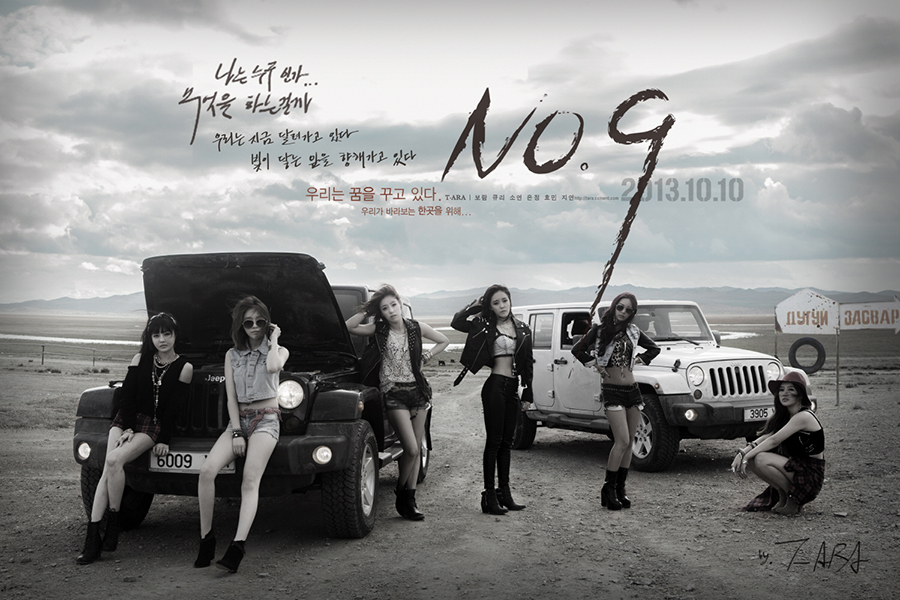

T-ara Profile!

T-ara is a South Korean girl group formed by Mnet Media in 2009. Before their debut, there was a high level of interest in the group as they were called "Super Rookies" and had been training for three years prior to debut. Originally a five member group, they released their first song Good Person for the Cinderella Man OST in April 2009. In June 2009 members Jiwon and Jiae left the group, ruining the original plans for debut. The next month, T-ara regrouped to become a 6 member group and released their debut single "Geojitmal".) Debut Date: July 29, 2009.
Jiyeon
- Birth name: Park Ji-yeon
- Date of birth: June 7, 1993
- Position: Vocalist, Main Dancer, Visual, Maknae
- Appeared in SG Wannabe's "My love Crybaby" & "Saranghae" music video.
- Appeared in a drama called Hello! Miss in 2007
- Participated in Wonder generation (SeeYa , Davichi)
- Participated in the project group T-ara & Supernova for the song TTL (Time to Love)
- Starred in 2009 drama Soul (Hon)
- Starred in 2010 drama God of Study (Master of Study).
- Starred in 2010 movie Death Bell 2
- Starred in 2010 drama Jungle Fish 2
- Was part of the SBS' variety show "Heroes"
- Cast in Dream High Season 2 (2012)

Hyomin
- Birth name: Park Sun-young
- Date of birth: May 30, 1989
- Position: Lead Rapper, Lead Vocalist, Lead dancer
- An Internet Ulzzang (Best Face)
- Appeared in F.T. Island's "Heaven" music video.
- Appeared in SG Wannabe's "Amazing Breakup" music video along with fellow ex-member Jiwon
- Participated in the project group T-ara & Supernova for the song TTL (Time to Love)
- Participated in "Wonder Woman" single with Seeya and Davichi.
- One of the regular casts in KBS "Invincible Youth" (2009/2010)
- Was one of the main in T-Ara's Bubi Bubi CF Mini-Drama
- Played Ban Seon Nyuh in the drama 'My Girlfriend is a Gumiho'
- Starred in the movie 'Gisaeng Ryung'
- Played Cho Young in the historical drama 'GyeBaek'
- Appeared on the Chinese We Got Married Valentine Special with Fu XinBo
- Cast in the upcoming 2012 drama titled "One Thousandth Man"
- Cast in the Japanease movie titled 'JINX' (2013)
Eunjung
- Birth name: Hahm Eun-jung
- Date of birth: December 12, 1988
- Position: Lead Vocalist, Main Rapper, Main Dancer
- Appeared in SG Wannabe's "Gashiri" music video.
- Appeared in F.T. Island's "Love Sick", "Thunder", and "Only One Person" music videos.
- Starring in 2009 movie Death Bell
- Featured in TVXQ drama series "Dating on Earth".
- Participated in the project group T-ara & Supernova for the song TTL (Time to Love)
- Participated in "Wonder Woman" single with Seeya and Davichi.
- Starred in the 2010 drama SBS Coffee house.
- Starred in the 2011 drama Dream High
- Starred in the 2011 movie "White"
- Participated in Davichi's latest song's Music Video, "Time, Please Stop".
- Starred in the movie titled 'White'
- Cast in the 2011 K-Drama 'Queen Insoo'
- Was in the variety show 'We Got Married' with Lee Jangwoo
- Cast in the 2012 Drama titled "Five Fingers"
.jpg)
Qri
- Birth name: Lee Ji Hyun
- Date of birth: December 12, 1986
- Position: Vocalist, Current Leader (2013~TBA)
- Appeared in 2009 drama Queen Seon Duk.
- Appeared solo on the cover of Ceci Magazine in October 2009.
- Modeled for a number of companies before debut.
- Appeared in T-ara & Supernova's TTL (Time to Love) music video
- Cameod in 2010 movie Death Bell 2.
- Appeared in 2010 drama Giant.
Soyeon
- Birth name: Park In-jung changed to Park Soyeon
- Date of birth: October 5, 1987
- Position: Main Vocalist
- Won Gold in 2005 CMB ChinChin Music Festival competition.
- Former SM Entertainment trainee.
- Original Leader of Girls' Generation, but left before debut due to personal reasons
- Participated in the project group T-ara & Supernova for the song TTL (Time to Love)
- Starred in KBS Invincible Baseball (2009)
- Appeared in 2010 drama Giant.
- Sang the song ???? (Part.2) for the SBS drama Coffee House with former Fin.K.L member Oak Joo Hyun.
- Was Part of KBS' Oh! My School
- Cast in the 2012 Drama titled "Haeundae Lovers"
.jpg)
Boram
- Birth Name: Jeon Bo-ram
- Date of birth: March 22, 1986
- Position: Vocalist
- Released solo EP in 2008 titled From Memory.
- Released Digital single in 2008 titled Lucifer Project Vol 1.
- Appeared in Kebee's "Feeling You" music video.
- Appeared in 2009 drama Soul.
- Appeared in T-ara & Supernova's TTL (Time to Love) music video
- Appeared in Tik Tok music drama with 2PM and Yoon Eun Hye